Co-GS SLAM
Co-GS SLAMBuild Gaussian submaps
Each agent tracks its RGB-D stream with frame-to-model G-ICP and builds Gaussian submaps in its own reference frame.
ICRA 2027 · Under review
Multiple agents. One consistent map.
Jointly refining geometry,
appearance, and camera poses.
The idea
Collaborative 3D Gaussian splatting (3DGS) simultaneous localization and mapping (SLAM) enables scalable mapping by merging the Gaussian maps that multiple agents build. Typically, each agent runs 3DGS SLAM on its own, and the server then merges their maps through a pose graph with intra- and inter-agent loop closures. Although recent methods achieve remarkable rendering quality, they still suffer from two challenges in real-world deployment: (i) intra-agent map inconsistency, caused by the inconsistent 3DGS SLAM of a single agent, and (ii) inter-agent loop inaccuracy, caused by sensor noise in the observations the loop closures between agents are estimated from. To address these challenges, we present Co-GS SLAM, which produces a geometrically and photometrically consistent merged map without any prior on their relative pose. Specifically, our Co-GS SLAM jointly optimizes the merged map and every agent's keyframe poses with a Pose-Dependent (PD) Gaussian model that expresses each Gaussian in the camera frame of its anchor keyframe. Extensive experiments on ten multi-agent sequences from four datasets (including our real-world in-house dataset) demonstrate the highest rendering fidelity and a lower trajectory error than every baseline on nine of the ten sequences, by 1.7× to 40× in trajectory error and 4.7 to 9.4 dB in PSNR on the real-world ones.
See it in motion
A closer look at collaborative mapping and reconstruction.
How it works
No prior on the agents’ relative poses is required.
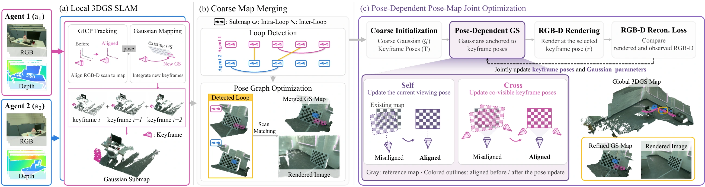
Each agent tracks its RGB-D stream with frame-to-model G-ICP and builds Gaussian submaps in its own reference frame.
Intra- and inter-agent loop closures connect the submaps. Global registration, G-ICP, and pose-graph optimization produce an initial merged map.
Pose-Dependent Gaussians couple the map to its anchor keyframes. Rendering losses refine geometry, appearance, and camera poses together.
The key representation
Each Gaussian is expressed in the camera frame of the keyframe that created it. Its world-frame position follows that anchor’s current pose.
Rendering provides a self path to the viewing pose and a cross path to the anchor poses, correcting both drift within an agent’s map and misalignment between agents.
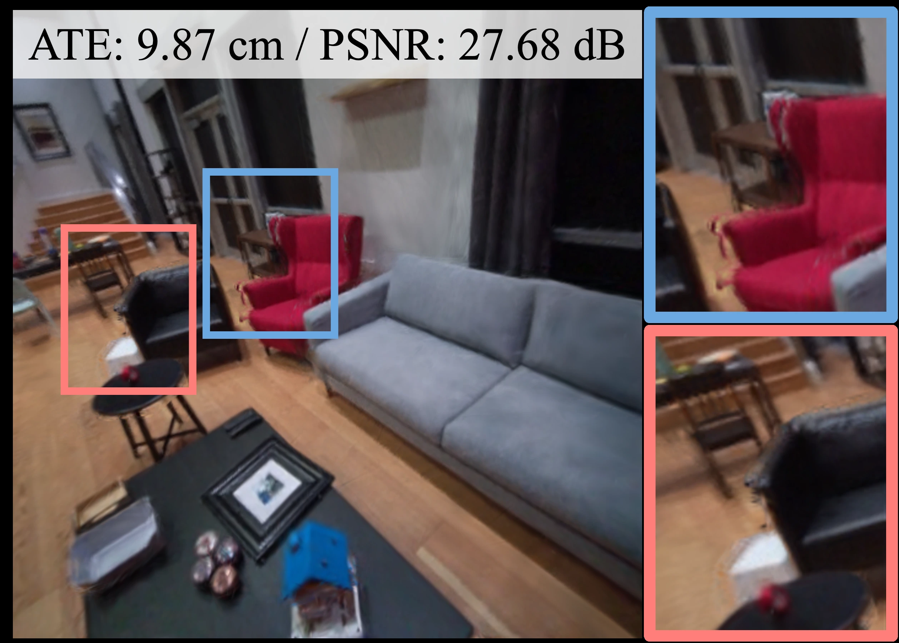
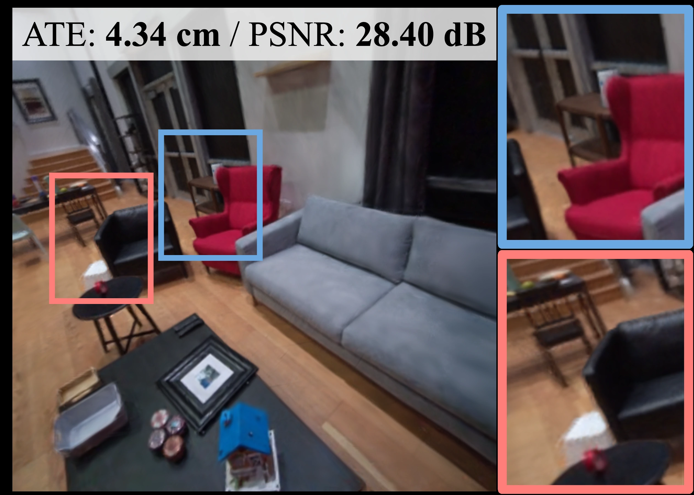
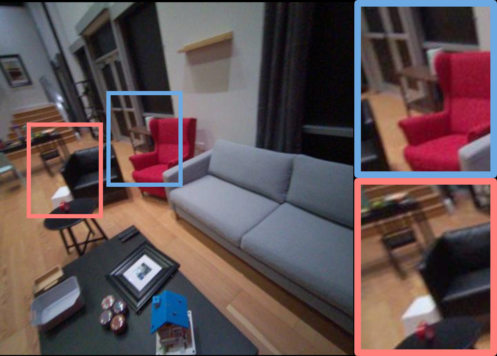
Aria room 0 with injected inter-agent loop noise. The PD model removes the double chair contours left by world-frame Gaussians.
Measured in the real world
Keyframe evaluation on TUM and our in-house RGB-D sequences.
Bar lengths use a linear scale from zero, shared across all sequences for each metric. N/A indicates a failed run.
| Method | PSNR ↑ (dB) | ATE RMSE ↓ (cm) |
|---|---|---|
| CP-SLAM | 8.85 | 70.02 |
| MAGiC-SLAM | 15.37 | 24.96 |
| MAC-Ego3D | 17.19 | 15.00 |
| CoKo-SLAM | N/A | N/A |
| CoMA-SLAM | N/A | N/A |
| Proposed (map only) | 17.23 | 4.24 |
| Co-GS SLAM (joint w/ PD) | 23.39 | 2.11 |
| Method | PSNR ↑ (dB) | ATE RMSE ↓ (cm) |
|---|---|---|
| CP-SLAM | 15.68 | 11.23 |
| MAGiC-SLAM | 23.79 | 5.88 |
| MAC-Ego3D | 25.15 | 52.50 |
| CoKo-SLAM | 23.11 | 15.40 |
| CoMA-SLAM | 23.87 | 57.99 |
| Proposed (map only) | 28.44 | 5.21 |
| Co-GS SLAM (joint w/ PD) | 34.55 | 3.39 |
| Method | PSNR ↑ (dB) | ATE RMSE ↓ (cm) |
|---|---|---|
| CP-SLAM | 16.72 | 9.97 |
| MAGiC-SLAM | 22.12 | 13.59 |
| MAC-Ego3D | 24.40 | 156.50 |
| CoKo-SLAM | 20.98 | 38.80 |
| CoMA-SLAM | 25.81 | 122.23 |
| Proposed (map only) | 29.25 | 6.71 |
| Co-GS SLAM (joint w/ PD) | 34.93 | 4.78 |
| Method | PSNR ↑ (dB) | ATE RMSE ↓ (cm) |
|---|---|---|
| CP-SLAM | 12.22 | 199.31 |
| MAGiC-SLAM | 23.72 | 469.60 |
| MAC-Ego3D | 23.39 | 437.07 |
| CoKo-SLAM | 25.20 | 395.50 |
| CoMA-SLAM | 25.57 | 469.23 |
| Proposed (map only) | 26.97 | 9.52 |
| Co-GS SLAM (joint w/ PD) | 30.26 | 4.96 |
Values from the manuscript’s tracking and rendering tables. “Map only” holds keyframe poses fixed; Co-GS SLAM jointly optimizes with the PD model. Rendering is evaluated on keyframes, not held-out novel views.
The same Dream 01 scene, rendered at a keyframe from each agent.
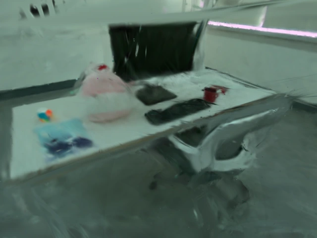
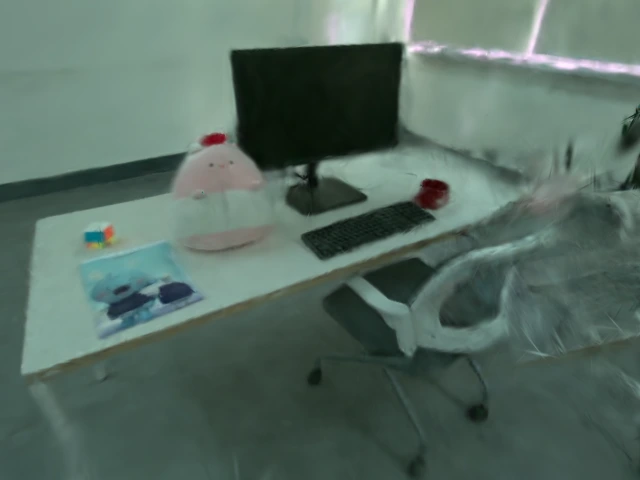
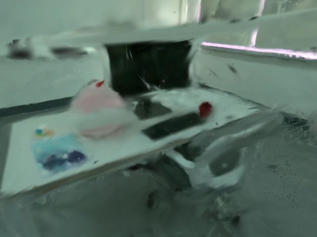
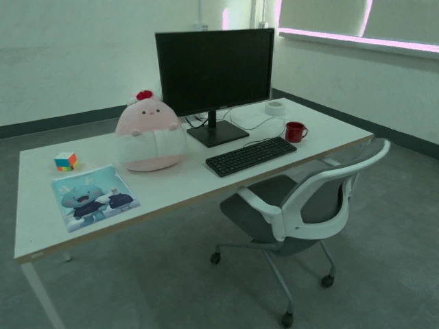
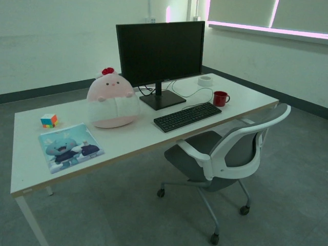
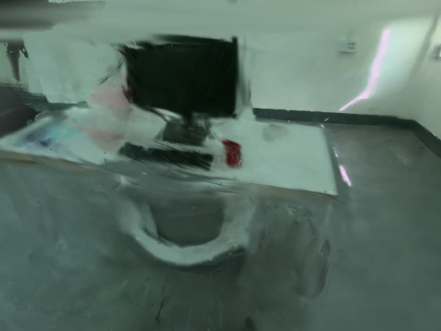
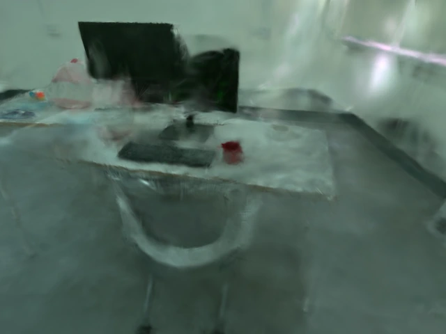
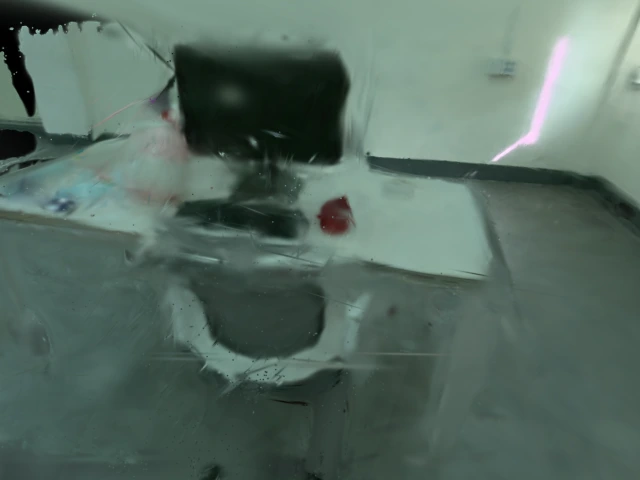
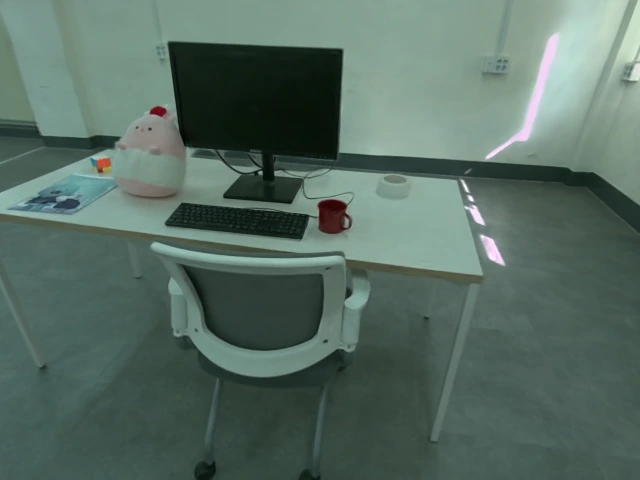
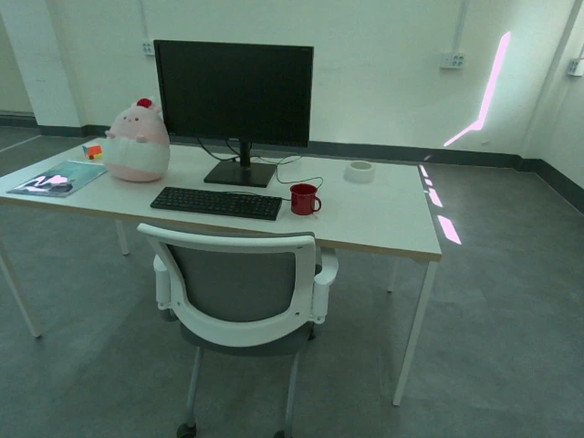
Co-GS SLAM recovers the keyboard, monitor, and chair structure where the baselines leave blur and duplicated surfaces.
A map you can explore
Explore the three-agent reconstructions from our main figure. Select a method to compare its map in 3D.
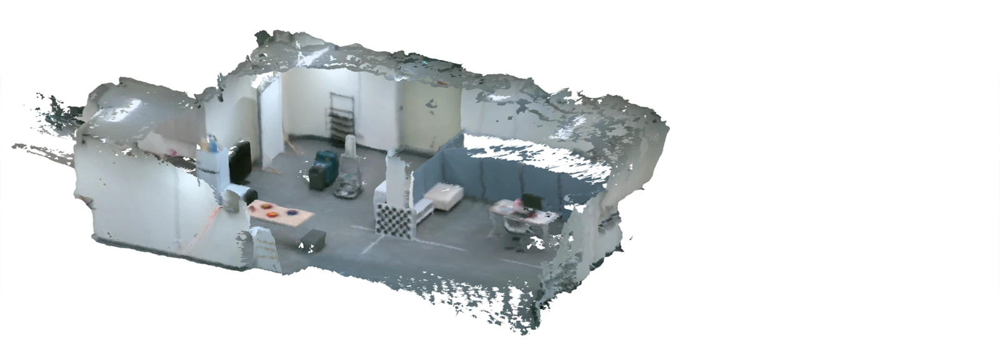
Loading Co-GS SLAM…
Colored camera frusta show sampled keyframe poses from each method, overlaid for visibility. A colored triangle mesh extracted from the optimized Gaussian map. The full reconstructed mesh is shown, including its original surfaces. Each method is fitted to the viewer using the same initial viewing direction. This viewer displays meshes, not live Gaussian rendering.
Open data
Real-world RGB-D sequences with motion-capture ground truth, used to evaluate Co-GS SLAM. We are releasing all three sequences.
SEQUENCE 01
Two agents map a shared desk.
SEQUENCE 02
Two agents map a second desk scene.
SEQUENCE 03
Three agents map an entire room.
Each sequence includes per-agent RGB-D streams and ground-truth trajectories. The data format, download size, and license will be announced with the release.